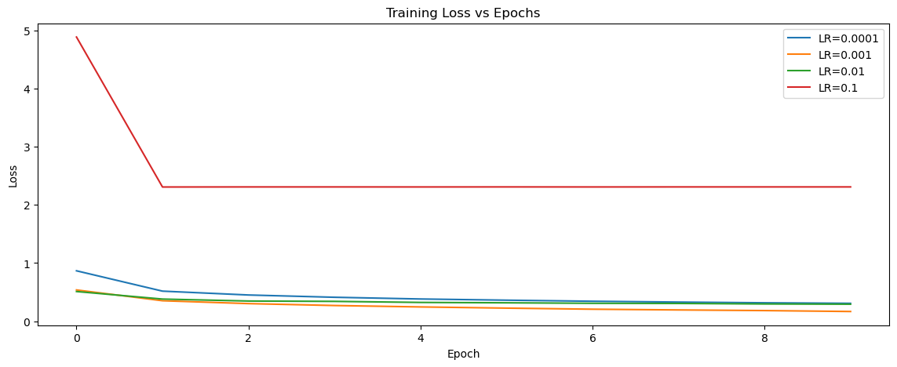
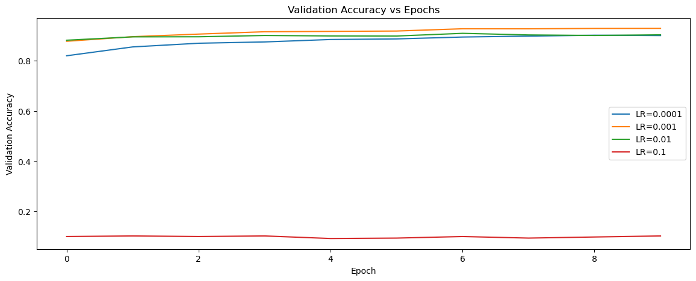

How Learning Rate Shapes the Training Journey of a Neural Network#
A Deep Dive Using Fashion-MNIST
Introduction#
In deep learning, no hyperparameter is as universally important—or universally troublesome—as the learning rate. It controls how fast or how cautiously our model updates its weights while learning.
Too small → training is painfully slow. Too large → the model explodes or bounces around without learning. Just right → fast convergence and good accuracy.
In this blog post, we explore the learning rate using a simple CNN trained on the Fashion-MNIST dataset. We’ll compare training curves, accuracy, and model stability across different learning rates.
What Is Learning Rate?#
The learning rate (LR) is a scalar coefficient 𝛼 used in gradient-based optimization:
Where:
\(\theta\) = model parameters
\(L\) = loss function
\(\nabla_{\theta} L(\theta)\) = gradient
\(\alpha\) = \text{learning rate}
Why It Matters
High LR → fast learning, but risk of divergence
Low LR → stable training, but slow and may get stuck
Optimal LR → smooth and efficient convergence
Experiment Setup#
Dataset
I used Fashion-MNIST: a collection of 28×28 grayscale images of clothing items (shirts, shoes, bags).
Model
A simple CNN:
Conv2D(32) → ReLU
Conv2D(64) → ReLU
MaxPool
Dropout(0.25)
Dense(128) → ReLU
Dropout(0.5)
Dense(10 softmax)
Learning Rates Tested
I trained the same model using:
0.0001 (very small LR)
0.001 (typical LR)
0.01 (high LR)
0.1 (very high LR)
Code#
import warnings
warnings.filterwarnings('ignore')
import tensorflow as tf
from tensorflow.keras import layers, models
import matplotlib.pyplot as plt
# Load Fashion-MNIST
(x_train, y_train), (x_test, y_test) = tf.keras.datasets.fashion_mnist.load_data()
x_train = x_train[..., None] / 255.
x_test = x_test[..., None] / 255.
# Function to build the CNN model
def build_model(lr):
model = models.Sequential([
layers.Conv2D(32, (3,3), activation='relu', input_shape=(28,28,1)),
layers.Conv2D(64, (3,3), activation='relu'),
layers.MaxPooling2D(),
layers.Dropout(0.25),
layers.Flatten(),
layers.Dense(128, activation='relu'),
layers.Dropout(0.5),
layers.Dense(10, activation='softmax')
])
optimizer = tf.keras.optimizers.Adam(learning_rate=lr)
model.compile(optimizer=optimizer,
loss='sparse_categorical_crossentropy',
metrics=['accuracy'])
return model
learning_rates = [0.0001, 0.001, 0.01, 0.1]
histories = {}
for lr in learning_rates:
print(f"\nTraining with learning rate = {lr}")
model = build_model(lr)
history = model.fit(
x_train, y_train,
validation_split=0.1,
epochs=10,
batch_size=128,
verbose=2
)
histories[lr] = history
Training with learning rate = 0.0001
Epoch 1/10
422/422 - 58s - 138ms/step - accuracy: 0.7113 - loss: 0.8667 - val_accuracy: 0.8192 - val_loss: 0.4844
Epoch 2/10
422/422 - 56s - 134ms/step - accuracy: 0.8198 - loss: 0.5170 - val_accuracy: 0.8543 - val_loss: 0.4133
Epoch 3/10
422/422 - 58s - 137ms/step - accuracy: 0.8437 - loss: 0.4506 - val_accuracy: 0.8690 - val_loss: 0.3717
Epoch 4/10
422/422 - 58s - 138ms/step - accuracy: 0.8572 - loss: 0.4115 - val_accuracy: 0.8742 - val_loss: 0.3451
Epoch 5/10
422/422 - 59s - 140ms/step - accuracy: 0.8664 - loss: 0.3818 - val_accuracy: 0.8838 - val_loss: 0.3268
Epoch 6/10
422/422 - 64s - 151ms/step - accuracy: 0.8737 - loss: 0.3615 - val_accuracy: 0.8862 - val_loss: 0.3103
Epoch 7/10
422/422 - 59s - 140ms/step - accuracy: 0.8789 - loss: 0.3431 - val_accuracy: 0.8937 - val_loss: 0.3027
Epoch 8/10
422/422 - 57s - 135ms/step - accuracy: 0.8839 - loss: 0.3287 - val_accuracy: 0.8973 - val_loss: 0.2896
Epoch 9/10
422/422 - 57s - 134ms/step - accuracy: 0.8881 - loss: 0.3164 - val_accuracy: 0.9008 - val_loss: 0.2803
Epoch 10/10
422/422 - 57s - 134ms/step - accuracy: 0.8929 - loss: 0.3072 - val_accuracy: 0.8995 - val_loss: 0.2760
Training with learning rate = 0.001
Epoch 1/10
422/422 - 60s - 143ms/step - accuracy: 0.8096 - loss: 0.5375 - val_accuracy: 0.8768 - val_loss: 0.3356
Epoch 2/10
422/422 - 60s - 143ms/step - accuracy: 0.8736 - loss: 0.3519 - val_accuracy: 0.8950 - val_loss: 0.2819
Epoch 3/10
422/422 - 59s - 141ms/step - accuracy: 0.8913 - loss: 0.3026 - val_accuracy: 0.9053 - val_loss: 0.2575
Epoch 4/10
422/422 - 55s - 129ms/step - accuracy: 0.9030 - loss: 0.2697 - val_accuracy: 0.9147 - val_loss: 0.2331
Epoch 5/10
422/422 - 73s - 173ms/step - accuracy: 0.9101 - loss: 0.2453 - val_accuracy: 0.9162 - val_loss: 0.2232
Epoch 6/10
422/422 - 79s - 188ms/step - accuracy: 0.9162 - loss: 0.2249 - val_accuracy: 0.9175 - val_loss: 0.2202
Epoch 7/10
422/422 - 66s - 157ms/step - accuracy: 0.9251 - loss: 0.2062 - val_accuracy: 0.9265 - val_loss: 0.2068
Epoch 8/10
422/422 - 54s - 129ms/step - accuracy: 0.9283 - loss: 0.1936 - val_accuracy: 0.9263 - val_loss: 0.2131
Epoch 9/10
422/422 - 68s - 162ms/step - accuracy: 0.9326 - loss: 0.1827 - val_accuracy: 0.9278 - val_loss: 0.2003
Epoch 10/10
422/422 - 66s - 156ms/step - accuracy: 0.9381 - loss: 0.1669 - val_accuracy: 0.9282 - val_loss: 0.2079
Training with learning rate = 0.01
Epoch 1/10
422/422 - 71s - 168ms/step - accuracy: 0.8158 - loss: 0.5104 - val_accuracy: 0.8810 - val_loss: 0.3165
Epoch 2/10
422/422 - 63s - 150ms/step - accuracy: 0.8615 - loss: 0.3805 - val_accuracy: 0.8943 - val_loss: 0.2821
Epoch 3/10
422/422 - 63s - 150ms/step - accuracy: 0.8747 - loss: 0.3468 - val_accuracy: 0.8947 - val_loss: 0.2868
Epoch 4/10
422/422 - 63s - 149ms/step - accuracy: 0.8761 - loss: 0.3407 - val_accuracy: 0.8998 - val_loss: 0.2761
Epoch 5/10
422/422 - 62s - 148ms/step - accuracy: 0.8815 - loss: 0.3228 - val_accuracy: 0.8980 - val_loss: 0.2725
Epoch 6/10
422/422 - 62s - 147ms/step - accuracy: 0.8829 - loss: 0.3164 - val_accuracy: 0.8977 - val_loss: 0.2783
Epoch 7/10
422/422 - 61s - 145ms/step - accuracy: 0.8875 - loss: 0.3079 - val_accuracy: 0.9083 - val_loss: 0.2522
Epoch 8/10
422/422 - 66s - 156ms/step - accuracy: 0.8868 - loss: 0.3054 - val_accuracy: 0.9020 - val_loss: 0.2709
Epoch 9/10
422/422 - 66s - 157ms/step - accuracy: 0.8908 - loss: 0.2967 - val_accuracy: 0.8998 - val_loss: 0.2708
Epoch 10/10
422/422 - 64s - 151ms/step - accuracy: 0.8910 - loss: 0.2925 - val_accuracy: 0.9025 - val_loss: 0.2675
Training with learning rate = 0.1
Epoch 1/10
422/422 - 72s - 171ms/step - accuracy: 0.1021 - loss: 4.8867 - val_accuracy: 0.1003 - val_loss: 2.3070
Epoch 2/10
422/422 - 62s - 147ms/step - accuracy: 0.1004 - loss: 2.3076 - val_accuracy: 0.1027 - val_loss: 2.3135
Epoch 3/10
422/422 - 64s - 152ms/step - accuracy: 0.0995 - loss: 2.3089 - val_accuracy: 0.1003 - val_loss: 2.3068
Epoch 4/10
422/422 - 61s - 145ms/step - accuracy: 0.1000 - loss: 2.3089 - val_accuracy: 0.1027 - val_loss: 2.3070
Epoch 5/10
422/422 - 61s - 144ms/step - accuracy: 0.1001 - loss: 2.3084 - val_accuracy: 0.0925 - val_loss: 2.3102
Epoch 6/10
422/422 - 60s - 142ms/step - accuracy: 0.1009 - loss: 2.3092 - val_accuracy: 0.0942 - val_loss: 2.3047
Epoch 7/10
422/422 - 63s - 149ms/step - accuracy: 0.0976 - loss: 2.3084 - val_accuracy: 0.1003 - val_loss: 2.3059
Epoch 8/10
422/422 - 68s - 161ms/step - accuracy: 0.0963 - loss: 2.3091 - val_accuracy: 0.0942 - val_loss: 2.3081
Epoch 9/10
422/422 - 64s - 151ms/step - accuracy: 0.1002 - loss: 2.3090 - val_accuracy: 0.0985 - val_loss: 2.3062
Epoch 10/10
422/422 - 60s - 143ms/step - accuracy: 0.0994 - loss: 2.3091 - val_accuracy: 0.1027 - val_loss: 2.3032
Plotting the Training Curves#
plt.figure(figsize=(14,5))
for lr, hist in histories.items():
plt.plot(hist.history['loss'], label=f'LR={lr}')
plt.title("Training Loss vs Epochs")
plt.xlabel("Epoch")
plt.ylabel("Loss")
plt.legend()
plt.show()
plt.figure(figsize=(14,5))
for lr, hist in histories.items():
plt.plot(hist.history['val_accuracy'], label=f'LR={lr}')
plt.title("Validation Accuracy vs Epochs")
plt.xlabel("Epoch")
plt.ylabel("Validation Accuracy")
plt.legend()
plt.show()


Results & Analysis#
LR = 0.0001 (Very Low)
Loss decreases slowly but steadily
Validation accuracy improves gradually
No instability
Slight underfitting due to slow learning
LR = 0.001 (Best Performer)
Smooth, stable loss curve
Fast and consistent convergence
Highest validation accuracy among all runs
No spikes or divergence Best learning rate in this experiment
LR = 0.01 (High)
Slightly faster loss reduction than 0.001 at first
Validation accuracy is high and stable
Not much instability in your actual plots Still a good LR — not unstable in your case
LR = 0.1 (Too High)
Training loss starts very high and collapses into a constant plateau
Validation accuracy stays extremely low (~10%)
Model basically fails to learn anything Diverged / stuck — too large to train
Key Insights#
Learning rate heavily influences training stability and model performance.
The experiments clearly show that changing the learning rate alters both how fast the model learns and whether it learns at all.
LR = 0.001 provides the best overall performance.
Smooth loss reduction
High validation accuracy
No signs of divergence
This makes it the optimal learning rate for this task.
LR = 0.0001 is stable but learns too slowly.
Loss decreases steadily but very gradually
Reaches good accuracy but slower than LR = 0.001
Best used when extremely stable learning is needed
LR = 0.01 still performs well.
Loss and accuracy curves are stable
Only slightly worse than LR = 0.001
Still a viable learning rate for this dataset/model
LR = 0.1 is too high and causes learning failure.
Training loss spikes then becomes stuck
Validation accuracy remains around random guessing (~10%)
Strong evidence of divergence
Model cannot optimize with such a large step size
Conclusion#
The experiment demonstrates that tuning the learning rate is crucial for effective neural network training. A moderate learning rate (0.001) provides the best balance of stability and speed, allowing the model to converge efficiently while maintaining high accuracy. Very low learning rates (0.0001) learn too slowly, while very high rates (0.1) destabilize the training process and prevent the model from learning altogether.